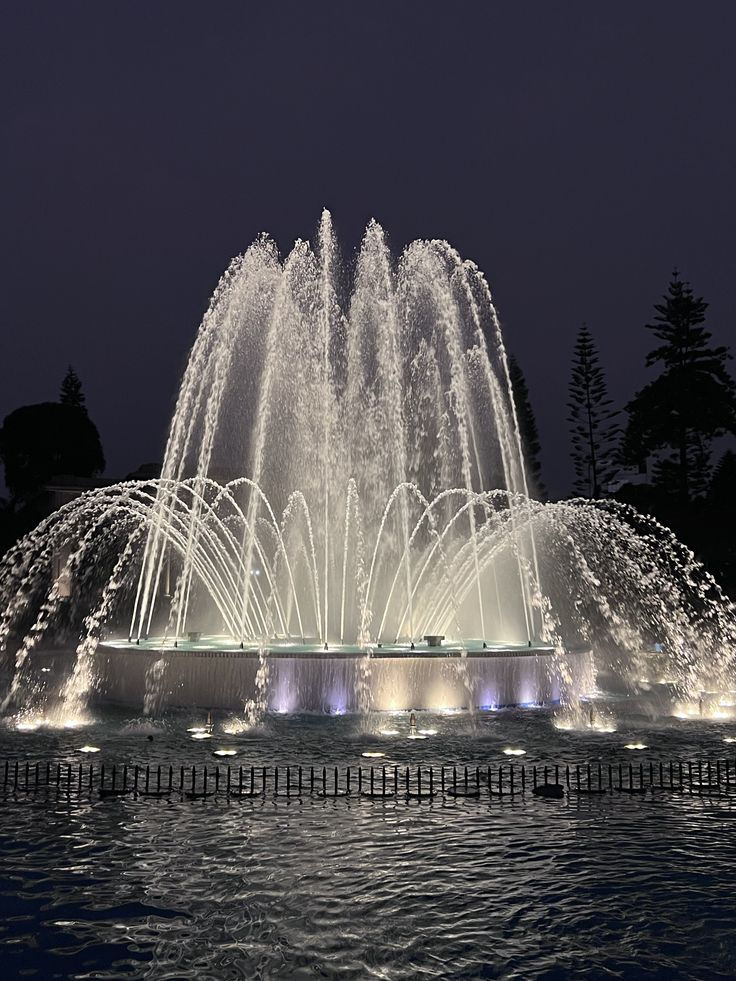

Thoughtful design
Proportion, placement and water movement considered in the context of your space.
Our approach
A fountain is more than a feature. It brings movement, atmosphere and a sense of calm to the spaces where life happens.

25 years of experience
With 25 years of experience in the fountain and water-feature space, Chambal Fountain brings practical understanding to every conversation — from choosing a suitable style to thinking through scale, finish and site requirements.
Our focus is simple: help each client find a fountain that feels right for its setting, whether that is a private garden, a welcoming entrance, a hotel courtyard or a larger landscape.
Talk to our team →What guides us
Every project has its own character. We help bring the elements together with care and clarity.
Proportion, placement and water movement considered in the context of your space.
Explore stone looks, finishes and practical choices suited to the setting.
Discuss requirements, project expectations and quotation details before moving ahead.
Your space, your vision
Tell us what you have in mind and let's explore the possibilities together.
Start a custom design →